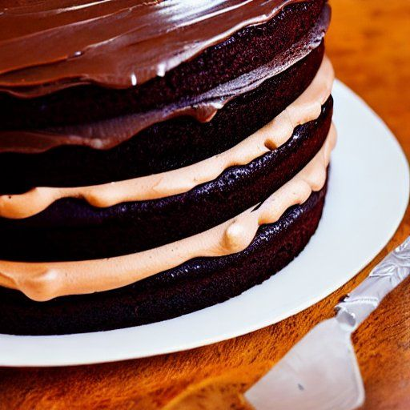

Gâteau au chocolat
Préparation: 15 minutes
Cuisson: 40 minutes
Total: 55 minutes
Ingrédients
-
1 3/4 t de farine tout usage

-
1 3/4 t de sucre
-
1 1/4 c. à thé de bicarbonate de soude
-
1 c. à thé de sel
-
1/4 c. à thé de poudre à pâte
-
2/3 t de beurre ramolli
-
4 carré de chocolat baker's non-sucré
-
1 1/4 t d'eau
-
1 c. à thé d'extrait de vanille
-
3 oeuf
Instructions
Préchauffer le four à 180 °C (350 °F)
Dans un grand bol, battre pendant 2 minutes tous les ingrédients du gâteau à l'exception des oeufs.
- 1 3/4 t de farine tout usage
- 1 3/4 t de sucre
- 1 1/4 c. à thé de bicarbonate de soude
- 1 c. à thé de sel
- 1/4 c. à thé de poudre à pâte
- 2/3 t de beurre ramolli
- 4 carré de chocolat baker's non-sucré
- 1 1/4 t d'eau
- 1 c. à thé d'extrait de vanille
Ajouter 3 oeuf et battre 2 minutes de plus.
Verser dans 2 moules ronds de 23 cm de diamètre (9 po) graissés et farinés. Cuire au four de 35 à 40 minutes. Un cure-dents inséré au centre du gâteau devrait ressortir propre. Laisser tièdir 10 minutes, puis démouler.